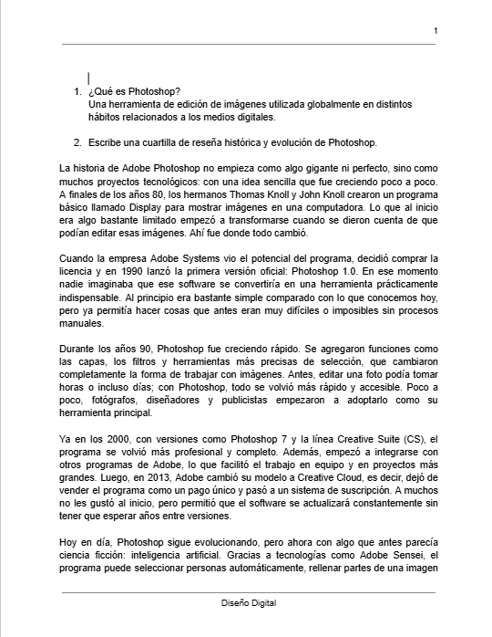
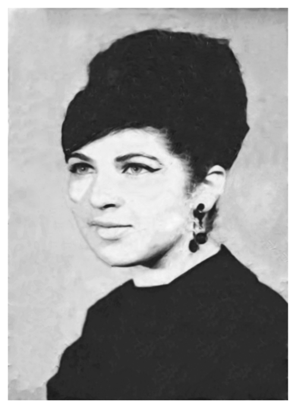
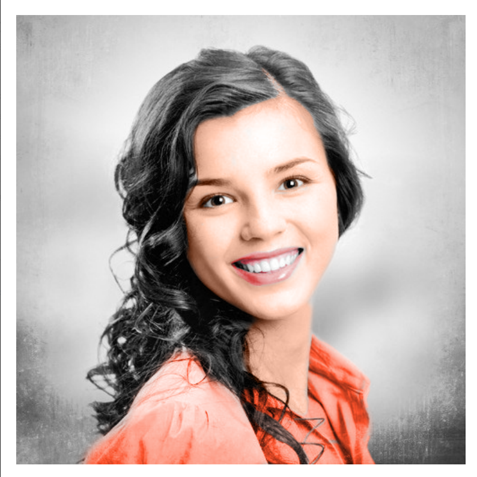
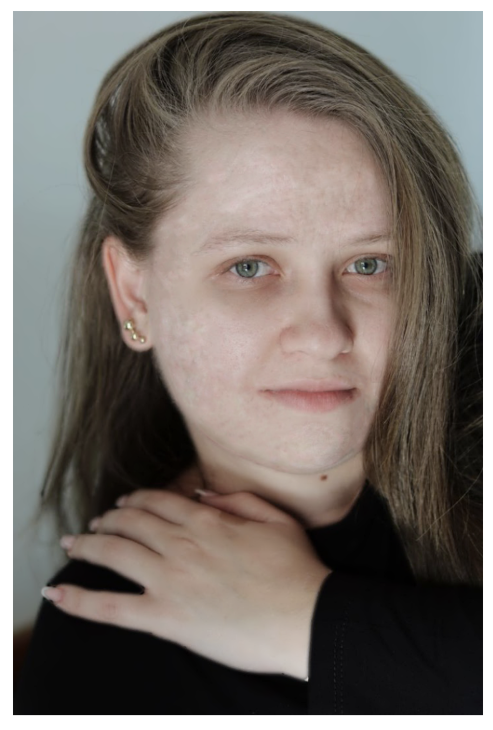
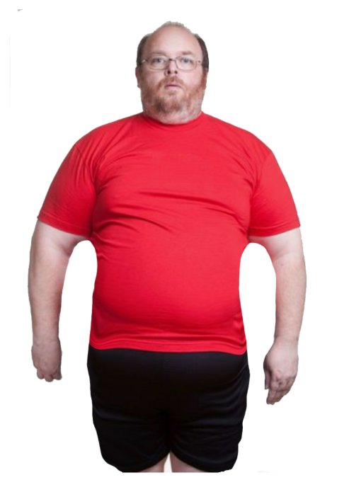
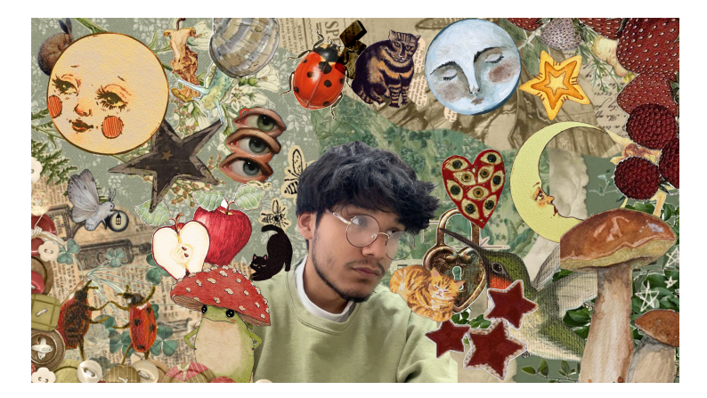
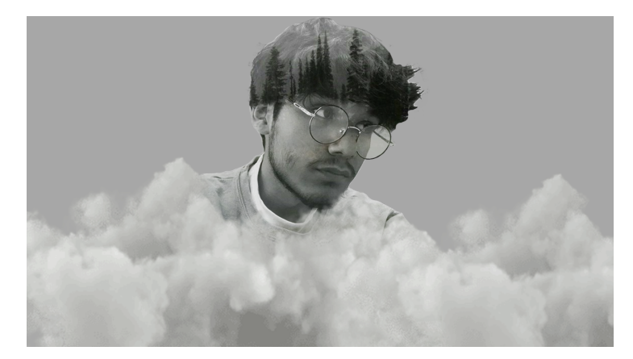

Actividad 1
Participación 2: Conociendo Photoshop
Investigación sobre photoshop.

Actividad 2
Práctica 6: Restauración de fotografía
Se restauró una foto antigua.

Actividad 3
Práctica 7: Aplicar color a Fotos Antiguas
Se aplicó color a una foto en blanco y negro.

Actividad 4
Práctica 8: Retoque de Piel (Eliminación de imperfecciones)
Se retocó una imagen.

Actividad 5
Práctica 9: Estilización de Figura (Herramienta Licuar)
Se modificó el cuerpo de una persona.
Actividad 6
Participación 3: El Arte del Retoque Fotográfico y la Ética Visual
Investigación sobre el retoque fotografico.
Actividad 7
Participación 4: El Flujo de Trabajo Profesional (Destructivo vs. No Destructivo)
Video tutorial.
Actividad 8
Participación 5: Fotocomposición y Modos de Fusión
Video tutorial sobre fotocomposicion.

Actividad 9
Práctica 10: Collage Surrealista / Pop Art "Mi Mente en Capas"
Se realizó un collage.

Actividad 10
Practica 11: Fotomontaje "Tú en un Mundo Extraño" (Doble Exposición o Integración Surrealista)
Se realizó un montaje.